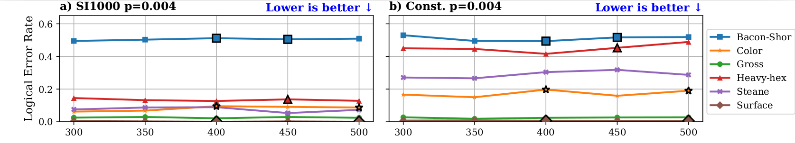
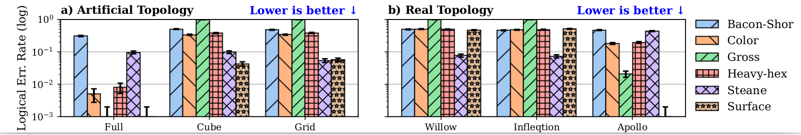

This section explores how physical hardware constraints—specifically code scaling and qubit connectivity—impact the effectiveness of QEC codes.
Contrary to theoretical expectations, increasing code distance does not consistently improve logical performance on realistic hardware. On average, raising the distance (e.g., from 3 to 5) actually raises logical error rates by approximately 0.012 due to the overhead of additional qubits and gates.

Figure 1: Scaling of logical error rate with increased code distance on constrained topologies.
Our experiments show that qubit connectivity is the most critical factor for QEC effectiveness. Transitioning from a 2D grid to an idealized fully connected layout reduces the logical error rate by 81.92% on average. In realistic mid-term devices, mechanisms like qubit shuttling (trapped-ion) improve performance by 45% compared to static constrained layouts.

Figure 2: Impact of various topologies on logical error rates across different code families.